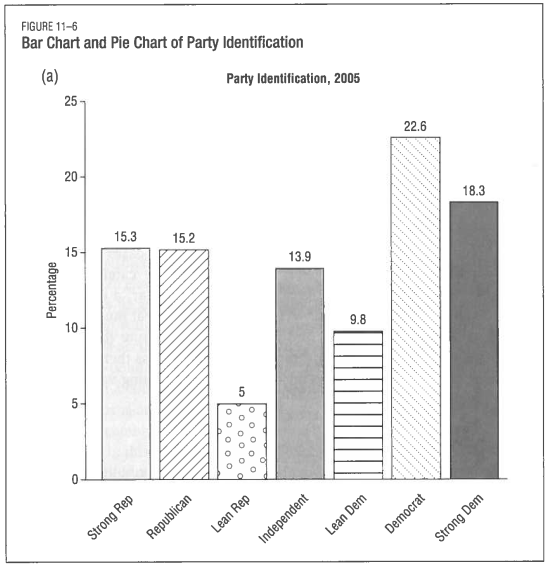
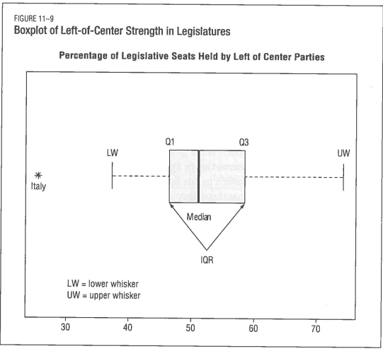

Democratic Republican
0.4166667 0.5833333 Today’s Agenda
Univariate Analyses
- Building univariate visualizations
Justin Leinaweaver (Spring 2026)
Practice Exercises
What proportion of US presidents since 1953 have been Republicans? (Built-in Data: presidential, Variable: party)
Why are the mean and median total populations in the midwest so different from each other? (Built-in Data: midwest, Variable: poptotal)
How many hours per day do you have to sleep to sleep longer than 75% of studied mammals? (Built-in Data: msleep, Variable: sleep_total)
Which mammal sleeps the least and which the most? (Built-in Data: msleep, Variable: sleep_total)
Practice Exercises
What proportion of US presidents since 1953 have been Republicans?
Practice Exercises
Why are the mean and median total populations in the midwest so different from each other?
Practice Exercises
How many hours per day do you have to sleep to sleep longer than 75% of studied mammals?
Practice Exercises
Which mammal sleeps the least and which the most?
| name | sleep_total |
|---|---|
| Giraffe | 1.9 |
| Pilot whale | 2.7 |
| Horse | 2.9 |
| Roe deer | 3.0 |
| Donkey | 3.1 |
| African elephant | 3.3 |
| Caspian seal | 3.5 |
| Sheep | 3.8 |
| Asian elephant | 3.9 |
| Cow | 4.0 |
| name | sleep_total |
|---|---|
| Little brown bat | 19.9 |
| Big brown bat | 19.7 |
| Thick-tailed opposum | 19.4 |
| Giant armadillo | 18.1 |
| North American Opossum | 18.0 |
| Long-nosed armadillo | 17.4 |
| Owl monkey | 17.0 |
| Arctic ground squirrel | 16.6 |
| Golden-mantled ground squirrel | 15.9 |
| Tiger | 15.8 |
Practice Exercises

A method for summarizing data in more compelling, easier to understand and more informative methods than descriptive statistics.
Why draw visualizations by hand?

Principle 3 in action
Learn to think like a programmer
Learn to “see” descriptive statistics
Principle 3
Variable Type Determines Tool
Univariate Visualizations
If a categorical variable, make a bar plot
If a numeric variable, make a box plot or histogram
If a numeric variable across time, make a line plot
Categorical Variable: Make a Bar Plot
Bar Plots
Counts
Proportions

Categorical Variable: Make a Bar Plot
By hand, draw a bar plot of drive train levels (drv) for the cars in the mpg dataset.
Count the levels
Draw X axis with labels
Draw Y axis to max height
Add the bars

Categorical Variable: Make a Bar Plot
By hand, draw a bar plot of the proportion of parties that have controlled the presidency since 1953 in the presidential data set.
Count the levels and convert to proportions
Draw X axis with labels
Draw Y axis to max height
Add the bars
Categorical Variable: Make a Bar Plot

Numerical Variable: Make a Bar Plot?
Why can’t we simply make a bar plot for total population (poptotal) in the midwest data set?
Numerical Variable: Make a Bar Plot?
1701 3890 4373 4590 5189 5315 5322 5644 5730 5763
1 1 1 1 1 1 1 1 1 1
5836 6153 6534 6909 6976 7107 7440 7498 7523 7738
1 1 1 1 1 1 1 1 1 1
7842 7954 8096 8176 8302 8499 8583 8776 8854 8936
1 1 1 1 1 1 1 1 1 1
8972 9441 9914 10145 10369 10609 10626 10670 10674 11098
1 1 1 1 1 1 1 1 1 1
11164 11336 11347 12147 12200 12260 12321 12509 12643 12846
1 1 1 1 1 1 1 1 1 1
13084 13111 13175 13437 13497 13551 13584 13743 13772 13930
1 1 1 1 1 1 1 1 1 1
14008 14067 14080 14181 14194 14275 14460 14752 14931 14965
1 1 1 1 1 1 1 1 1 1
14991 15079 15317 15410 15497 15548 15600 15682 15921 15940
1 1 1 1 1 1 1 1 1 1
15972 16076 16085 16119 16269 16307 16516 16522 16527 16545
1 1 1 1 1 1 1 1 1 1
16588 16773 16805 17241 17281 17290 17521 17577 17619 17707
1 1 1 1 1 1 1 1 1 1
17808 17957 18052 18129 18185 18409 18651 18681 18809 18840
1 1 1 1 1 1 1 1 1 1
18878 18901 18993 19107 19181 19385 19464 19490 19505 19580
1 1 1 1 1 1 2 1 1 1
19595 19776 20146 20150 20488 20539 20893 20991 21265 21373
1 1 1 1 1 1 1 1 1 1
21398 21412 21468 21512 21650 21821 21896 22254 22261 22422
1 1 1 1 1 1 1 1 1 1
22454 22747 22987 23265 23645 23661 23717 24249 24616 24705
1 1 1 1 1 1 1 1 1 1
24920 24952 24960 25040 25263 25371 25533 25537 25617 25690
1 1 1 1 1 1 1 1 1 1
25948 25968 26015 26360 26521 26551 26831 26993 27148 27446
1 1 1 1 1 1 1 1 1 1
27466 27533 27651 27749 29108 29477 29797 29890 30209 30226
1 1 1 1 1 1 1 1 1 1
30230 30315 30339 30410 30464 30605 30728 30787 30798 30806
1 1 1 1 1 1 1 1 1 1
30954 30974 31095 31111 31557 31647 31679 31704 31913 31969
1 1 1 1 1 1 1 1 1 1
32337 32653 32765 32849 33819 33944 34291 34392 34418 34436
1 1 1 1 1 1 1 1 1 1
34583 34604 34773 34951 34966 35069 35244 35324 35415 35427
1 1 1 1 1 1 1 1 1 2
35446 35688 35728 35909 36019 36397 36616 36633 36897 36956
1 1 1 1 1 1 1 1 1 1
37020 37068 37157 37308 37730 37780 37877 38080 38147 38202
1 1 1 1 1 1 1 1 1 1
38413 38498 38835 38982 39024 39301 39350 39413 39443 39884
1 1 1 1 1 1 1 1 1 1
39928 40029 40113 40307 40319 40548 40750 41502 41561 41758
1 1 1 1 1 1 1 1 1 1
42182 42310 42836 43431 44585 44915 44920 45088 45527 45957
1 1 1 1 1 1 1 1 1 1
46104 46975 47473 47507 47679 47870 48052 48139 48255 49264
1 1 1 1 1 1 1 1 1 1
49477 50057 50251 51159 51644 52360 53059 53619 54624 55498
1 1 1 1 1 1 1 1 1 1
55920 56240 56393 57024 57733 57883 58913 59549 59733 60186
1 1 1 1 1 1 1 1 1 1
61067 61405 61834 61963 62254 63657 64273 64274 64404 65294
1 1 1 1 1 1 1 1 1 1
65536 66090 66929 67783 69330 69770 70060 70887 71074 71951
1 1 1 1 1 1 1 1 1 1
72831 73605 74169 74768 75000 75651 75717 76559 76779 77932
1 1 1 1 1 1 1 1 1 1
80298 80327 80421 80827 81129 82068 84090 85183 87777 88109
1 1 1 1 1 1 1 1 1 1
88257 90083 90509 91476 92879 93182 95328 96255 97904 99821
1 1 1 1 1 1 1 1 1 1
101461 103461 103877 106107 106913 107066 108276 108936 108978 109755
1 1 1 1 1 1 1 1 1 1
111723 113269 113909 115400 115645 117206 119659 122354 123692 126137
1 1 1 1 1 1 1 1 1 1
128181 128300 128932 129180 130598 130669 133600 135982 136731 139510
1 1 1 1 1 1 1 1 1 1
140320 140510 142585 145607 147548 148723 149756 150187 156198 158983
1 1 1 1 1 1 1 1 1 1
161378 165058 173025 175034 178386 182827 183241 187768 194594 211946
1 1 1 1 1 1 1 1 1 1
215499 223411 227813 247052 249238 252913 262852 264806 271126 281912
1 1 1 1 1 1 1 1 1 1
282937 291479 300836 304715 317471 357313 367085 367585 430459 462361
1 1 1 1 1 1 1 1 1 1
475594 500631 514990 516418 573809 717400 781666 797159 866228 959275
1 1 1 1 1 1 1 1 1 1
961437 1083592 1412140 2111687 5105067
1 1 1 1 1 Numerical Variable: Make a Histogram
Numerical Variable: Make a Histogram
- Make a binned table of city fuel economy (mpg dataset)
- Bin 1: 0 - 10
- Bin 2: 11 - 20
- Bin 3: 21 - 30
- Bin 4: 31 - 40
- Make a bar plot of these bins
Numerical Variable: Make a Histogram

| City Fuel Economy | Count |
|---|---|
| 0 - 10 | 5 |
| 11 - 20 | 184 |
| 21 - 30 | 43 |
| 31 - 40 | 2 |
Numerical Variable: Make a Histogram


Numerical Variable: Make a Box Plot
Box Plots
25th percentile
Median (50th)
75th percentile
IQR x 1.5

Numerical Variable: Make a Box Plot
By hand, draw a box plot of city fuel economy in the mpg data set
Calculate the median, the 25th and 75th percentiles
Draw X axis to include the full range of values
Draw the median as a small line
Draw the box around the IQR
Add the whiskers (1.5x the IQR)
Numerical Variable: Make a Box Plot
Numerical Variable: Histograms and Box Plots

Numeric Variables Across Time: Line Plots

Numeric Variables Across Time: Line Plots
Draw a line plot of US unemployment (unemploy) for the most recent 12 months in the economics data set.
Numeric Variables Across Time: Line Plots


Principle 3
Variable Type Determines Tool
Univariate Visualizations
If a categorical variable, make a bar plot
If a numeric variable, make a box plot or histogram
If a numeric variable across time, make a line plot